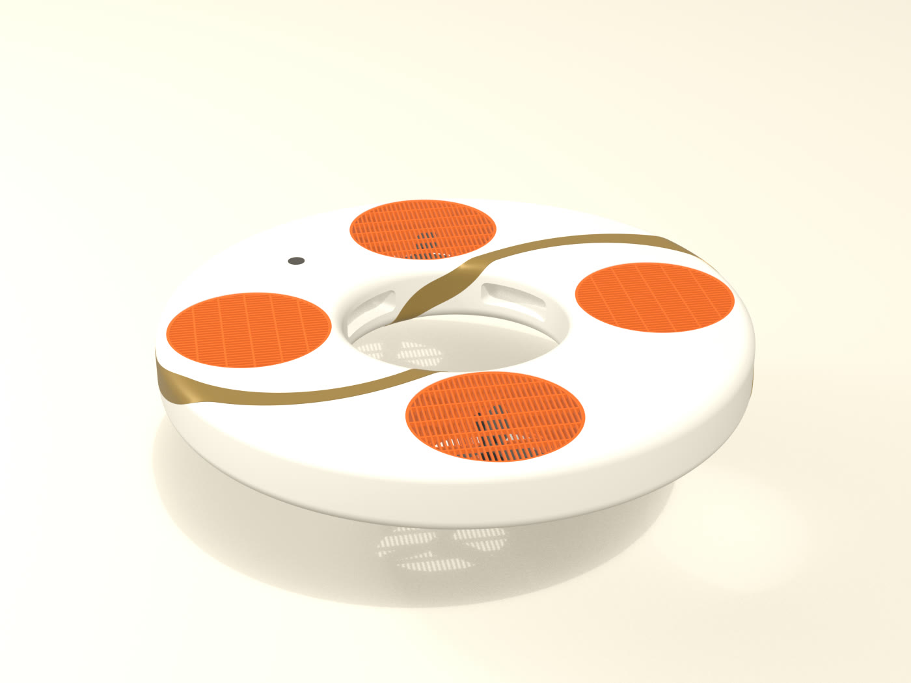
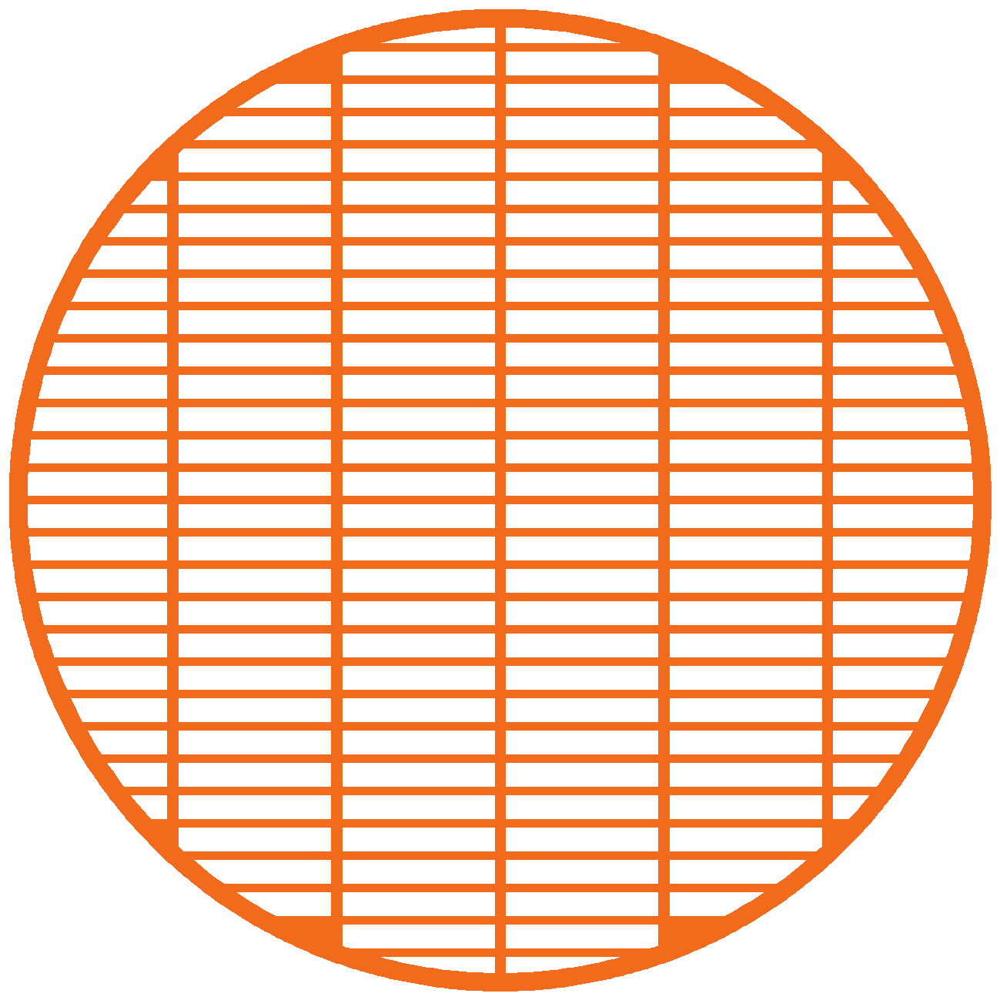

Qué es cada cosa del dron flotador, de qué está hecha y cómo se fabrica. Para leer antes de comprar, pedir o armar algo.

Versión del 30/10/2026, actualizada con las simplificaciones del plan de prototipo. Se actualiza en cada sesión de trabajo. Los números son aproximados hasta medirlos en banco y en pileta. Las imágenes son renders, no fotos de pruebas. El paso a paso de qué comprar y cómo armar está en el roadmap del prototipo.
Un aro de espuma de 80 cm con cuatro hélices metidas en tubos dentro del propio aro. Este es un corte por el centro de uno de los cuatro ductos.
El aro mide 90 mm de alto. Corte por el centro de un ducto. En el resto del aro la espuma es maciza, con las dos cajas estancas y los huecos para las manos (aprox., a validar).
La rejilla va arriba y abajo de cada hélice. Tiene flejes de 2 mm con ranuras de 5 mm y cinco nervios que los traban, así un dedo no entra ni abre la ranura.
Se corta en acrílico con láser, del mismo archivo en el banco y en el dron. En el dron va naranja, para que se vea dónde están las hélices.

De qué está hecho cada parte y por qué.
El cuerpo se corta en espuma. Las piezas chicas salen del láser o se compran hechas.
La lista con links y precios está en bom/lista-de-materiales.md y el paso a paso en docs/roadmap/.
La electrónica, de la batería a la hélice.
Antes de construir el dron se miden los números que hoy son cálculo.